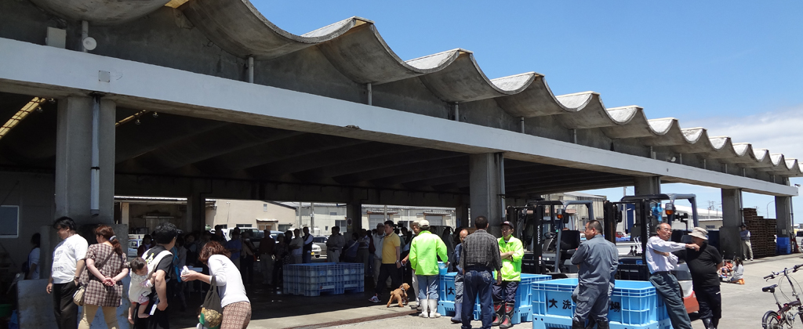
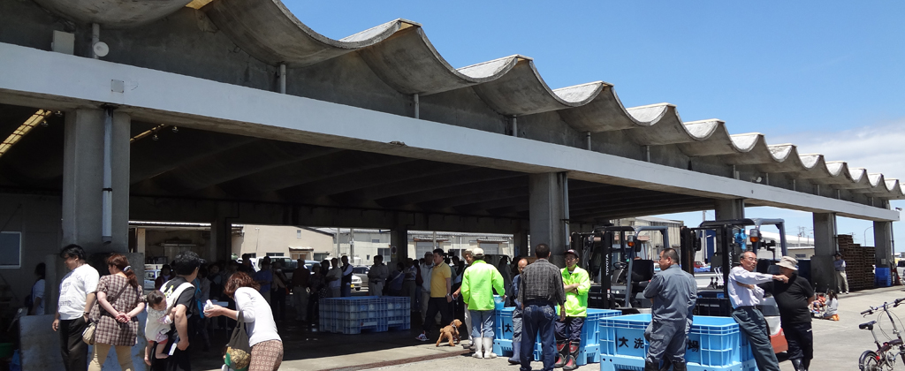

You will be able to browse visually we have collected, the circumstances of the damage related to the Great East Japan Earthquake in Ibaraki Prefecture.
I've created a video based on the image that you provide to industrial high school teachers of Northeast
You can view the status of damage Minamisanriku-cho, Sendai, Kesennuma tsunami damage was greater
Summarizes the mechanism and an earthquake occurs, and the action to be taken when the earthquake occurred
You can try four selected quiz your knowledge on earthquakes.
I will introduce the activities to reconstruction.
I will introduce the members who were involved in the production and research ・ Web site coverage
I will introduce the use of image material, and bibliography.
日本語版のWebサイトはこちら
 
